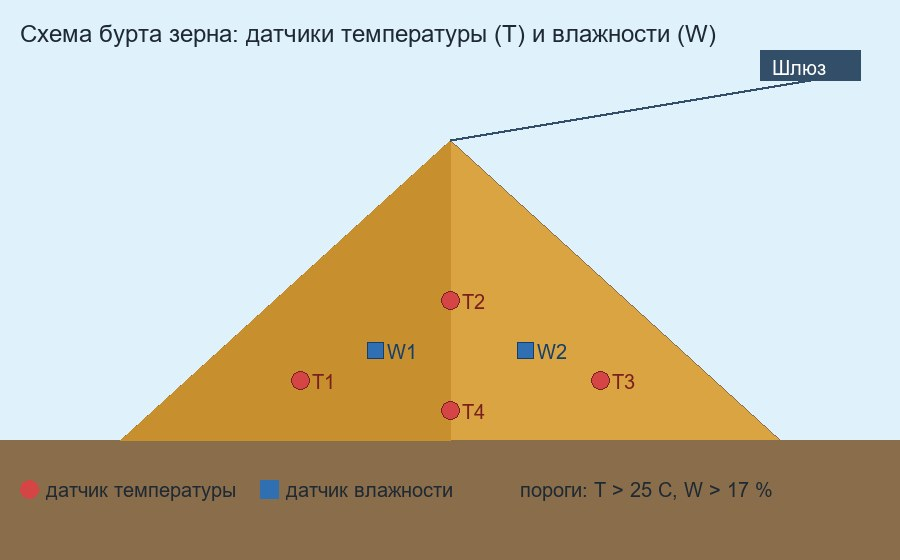

Что это такое
ZernoMonitor — вымышленная система непрерывного контроля состояния зерна при напольном хранении в буртах. Датчики температуры и влажности, размещённые по объёму бурта, передают показания на шлюз, а оператор видит карту полей и получает уведомления о начале самосогревания.
Возможности системы
- Опрос датчиков каждые 15 минут по шине RS-485;
- Пороги тревоги: температура выше 25 °C, влажность зерна выше 17 %;
- Карта бурта с цветовой индикацией зон самосогревания;
- Журнал событий и уведомления оператору;
- REST API для выгрузки показаний в учётные системы.
Схема размещения датчиков
